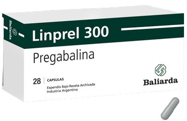

Ácido Valproico
Medicamento estabilizador del estado de animo, anticonvulsivante y para ciertos tipos de epilepsia y trastornos psiquiátricos como el trastorno bipolar.

Mecanismo de Acción
Facilita la acción del GABA y como consecuencia disminuye la excitabilidad neuronal responsable de las crisis epilépticas.
Indicaciones
Episodios de trastorno bipolar
Diversos tipos de epilepsia: crisis generalizadas tonicoclónicas, clónicas, ausencias , ausencias atípicas.
Convulsiones febriles.
Contraindicaciones
Hipersensibilidad
Antecedentes de enfermedad hepática, discrasias sanguíneas y durante el primer trimestre del embarazo.
Presentaciones
-
Cápsulas de 250 mg
-
Tabletas de 500 mg
-
Solución oral 250 mg / 5 ml
Cuidados de enfermería
Vigilar función hepática y signos de hepatotoxicidad.
No administrar con anticoagulantes.
Revisar periódicamente niveles séricos del ácido valproico en sangre.
Realizar hemograma, plaquetas, transaminasas y amonio según clínica.
Efectos adversos
Frecuentes:Náusea, vómito, diarrea, temblor, aumento de peso, irregularidad del periodo menstrual, irritacion gástrica
Poco frecuentes:Alargamiento del tiempo de coagulación , trombocitopenia, alopecia parcial y transitoria, anorexia, cefalea, irritabilidad, insomnio, depresión psíquica, alucinaciones, parestesias.
Raras:Hepatotoxicidad , pancreatitis, aumento de las crisis convulsivas y en algunos pacientes disfunción hepática.
Carbamazepina
Medicamento antiepiléptico y estabilizador del estado de animo.

Mecanismo de Acción
Inhibe la conductancia del sodio, acción que da lugar a un efecto estabilizador de las membranas excitables, inhibiendo las descargas de alta frecuencia.
Indicaciones
Trastorno bipolar
Diversos tipos de epilepsia
Neuralgia del trigémino y del glosofaríngeo
Contraindicaciones
Glaucoma, arritmias cardiacas, agranulocitosis, trombocitopenia, insuficiencia cardiaca o renal, primer trimestre de embarazo
Presentaciones
-
Tabletas de 200 y 400 mg
-
Suspensión oral 2% (100mg/5ml)
Cuidados de enfermería
No administrar con antidepresivos triciclicos.
Realizarse conteos sanguíneos antes del tratamiento que incluyan hemograma (plaquetas, reticulocitos, leucocitos) y hierro sérico.
La interrupción del tratamiento deberá hacerse de manera gradual.
Administrar el fármaco con los alimentos para evitar el malestar gastrointestinal.
Efectos adversos
Frecuentes:Náusea, vómito, diarrea, poliuria, polidipsia, urgencia urinaria, temblor fino, debilidad muscular.
Poco frecuentes:Presión estomacal, cansancio, erupción cutánea, signos de hipotiroidismo, pulso irregular, taquicardia, disnea, leucocitosis, diabetes insípida nefrógena, daño renal. La intoxicación conduce a confusión, estupor, convulsiones, hipotensión y coma.
Carbonato de Litio
Disminuye la intensidad y frecuencia de los episodios maníaco-depresivo.

Mecanismo de Acción
Actúa inhibiendo la despolarización que provocan las catecolaminas en el sistema nervioso central.
Indicaciones
Episodios trastorno bipolar
Estrategia de potenciación en depresión
Disminución del riesgo suicida
Depresión mayor
Contraindicaciones
Primer trimestre de embarazo, I.R. grave, enf. cardiovascular grave, debilitación, deshidratación o depleción de sodio severas, hipersensibilidad a litio
Presentaciones
-
Comprimidos, cápsulas o tabletas de 300 mg
Cuidados de enfermería
No debe administrarse simultáneamente con diuréticos y butirofenonas como el haloperidol.
Vigilancia de signos de toxicidad.
Realizar pruebas regulares de función renal (BUN, creatinina) y niveles de hormona tiroidea.
Vigilar CPK.
Verificar periódicamente los niveles plasmáticos de litio (litemias) para asegurar que estén dentro del rango terapéutico.
Efectos adversos
Frecuentes:Náusea, vómito, diarrea, poliuria, polidipsia, urgencia urinaria, temblor fino, debilidad muscular.
Poco frecuentes:Presión estomacal, cansancio, erupción cutánea, signos de hipotiroidismo, pulso irregular, taquicardia, disnea, leucocitosis, diabetes insípida nefrógena, daño renal. La intoxicación conduce a confusión, estupor, convulsiones, hipotensión y coma.
Lamotrigina
Estabilizador del estado de animo y Antiepiléptico derivado de la feniltriacina.
Mecanismo de Acción
Bloquea los canales de sodio voltaje dependientes, bloqueando las neuronas hiperexcitadas e inhibiendo la liberación patológica de glutamato y aspartato
Indicaciones
TAB en episodio depresivo
Convulsiones
Titulación progresiva
Contraindicaciones
Hipersensibilidad Alteración cardiaca, embarazo, disfunción hepática o renal, talasemia
Presentaciones
-
Tabletas de 5, 25, 50, 100 y 200 mg
-
Solución oral 200 mg / 5 ml
Cuidados de enfermería
No administrar otros depresores del sistema nervioso.
Observar signos de reacciones graves como el síndrome de Stevens-Johnson, especialmente durante las primeras semanas de tratamiento.
Efectos adversos
Frecuentes:Somnolencia, mareo, cefalea, insomnio, temblor, ataxia, visión borrosa o doble.
Poco frecuentes:Ansiedad, confusión, depresión mental, irritabilidad, cambios en el estado de ánimo, nistagmo, aumento de las crisis epilépticas.
Raras:Astenia, disartria, dispepsia, rinitis, angioedema, anemia, eosinofilia, leucopenia, trombocitopenia, eritema multiforme, síndrome de Stevens-Johnson, fiebre, petequias.
Pregabalina
Antiepiléptico y neuromodulador usado en el dolor neuropático periférico, y como terapia añadida en las crisis parciales o generalizadas convulsivas.
Mecanismo de Acción
Se une a la subunidad proteínica de los canales de calcio, lo cual atenúa la entrada de este, reduciendo la liberación de diversos neurotransmisores, como glutamato, noradrenalina y sustancia P.
Indicaciones
Trastorno de ansiedad generalizada
Dolor neuropático periférico y central, epilepsia y fibromialgias
Contraindicaciones
Primer trimestre de embarazo, pacientes con historia de hipersensibilidad a algunos de los ingredientes del producto
Presentaciones
-
Cápsulas de 25, 50, 75, 150 y 300 mg
-
Solución oral 20 mg/ml
Cuidados de enfermería
Vigilar antecedentes cardiacos, renales y de diabetes y cualquier cambio en estas áreas en su administración.
Monitorear comportamiento o ideas suicidas, especialmente, en la primera semana.
Efectos adversos
Frecuentes:Mareos, somnolencia, cefalea, pirexia, infección de las vías respiratorias superiores, aumento del apetito, aumento de peso y nasofaringitis.
Poco frecuentes:Estado de ánimo eufórico, confusión, irritabilidad, desorientación, insomnio, libido disminuida, ataxia, coordinación anormal, temblor, disartria, alteración de la memoria, alteración de la atención, parestesia, hipostesia, sedación, alteración del equilibrio, visión borrosa, calambres y dolores musculares, síndrome de Stevens-Johnson, estreñimiento.